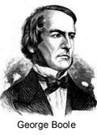
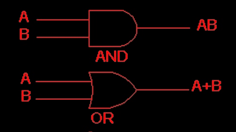

RESEÑA HISTÓRICA

A mediados del siglo XIX, George Boole (1815-1864), en sus libros: "The Mathematical Analysis of Logic" (1847) y "An Investigation of te Laws of Thought" (1854), desarrolló la idea de que las proposiciones lógicas podían ser tratadas mediante herramientas matemáticas. Las proposiciones lógicas (asertos, frases o predicados de la lógica clásica) son aquellas que únicamente pueden tomar valores Verdadero/Falso, o preguntas cuyas únicas respuestas posibles sean Sí/No. Según Boole, estas proposiciones pueden ser representadas mediante símbolos y la teoría que permite trabajar con estos símbolos, sus entradas (variables) y sus salidas (respuestas) es la Lógica Simbólica desarrollada por él. Dicha lógica simbólica cuenta con operaciones lógicas que siguen el comportamiento de reglas algebraicas. Por ello, al conjunto de reglas de la Lógica Simbólica se le denomina ÁLGEBRA DE BOOLE.
A mediados del siglo XX el álgebra Booleana resultó de una gran importancia práctica, importancia que se ha ido incrementando hasta nuestros días, en el manejo de información digital (por eso hablamos de Lógica Digital). Gracias a ella, Shannon (1930) pudo formular su teoría de la codificación y John Von Neumann pudo enunciar el modelo de arquitectura que define la estructura interna de los ordenadores desde la primera generación.
Todas las variables y constantes del Álgebra booleana, admiten sólo uno de dos valores en sus entradas y salidas: Sí/No, 0/1 o Verdadero/Falso. Estos valores bivalentes y opuestos pueden ser representados por números binarios de un dígito (bits), por lo cual el Álgebra booleana se puede entender cómo el Álgebra del Sistema Binario. Al igual que en álgebra tradicional, también se trabaja con letras del alfabeto para denominar variables y formar ecuaciones para obtener el resultado de ciertas operaciones mediante una ecuación o expresión booleana. Evidentemente los resultados de las correspondientes operaciones también serán binarios.
MÁS HISTORIA...
Todas las operaciones (representadas por símbolos determinados) pueden ser materializadas mediante elementos físicos de diferentes tipos (mecánicos, eléctricos, neumáticos o electrónicos) que admiten entradas binarias o lógicas y que devuelven una respuesta (salida) también binaria o lógica. Ejemplos de dichos estados son: Abierto/Cerrado (interruptor), Encendida/Apagada (bombilla), Cargado/Descargado (condensador) , Nivel Lógico 0/Nivel lógico 1 (salida lógica de un circuito semiconductor), etcétera.
Los dispositivos con los cuales se implementan las funciones lógicas son llamados puertas (o compuertas) y, habitualmente, son dispositivos electrónicos basados en transistores. Estos dispositivos, y otros que veremos a lo largo de esta unidad, son los que permiten el diseño, y la ulterior implementación, de los circuitos de cualquier ordenador moderno, así como de muchos de los elementos físicos que permiten la existencia de las telecomunicaciones modernas, el control de máquinas, etcétera. De hecho, pensando en los ordenadores como una jerarquía de niveles, la base o nivel inferior sería ocupada por la lógica digital (en el nivel más alto del ordenador encontraríamos los actuales lenguajes de programación de alto nivel).
En esta unidad se representan las puertas lógicas elementales, algunas puertas complejas y algunos ejemplos de circuitos digitales simples, así como algunas cuestiones de notación. Por otra parte se plantean actividades de trabajo, muchas de las cuales implican una respuesta escrita en vuestro cuaderno de trabajo. El deseo del autor es que os resulte sencillo y ameno adentraros en el mundo de la lógica digital y despertaros la curiosidad, tanto por ella, como por la matemática que subyace en ella.
